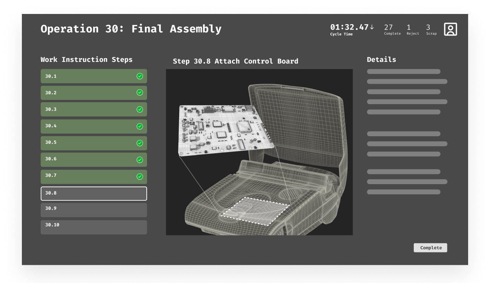
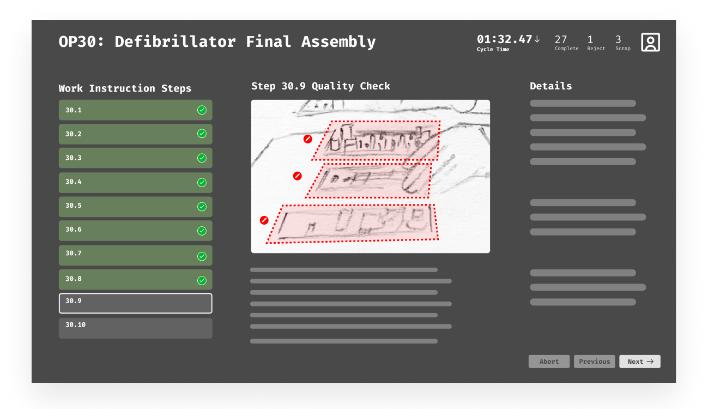
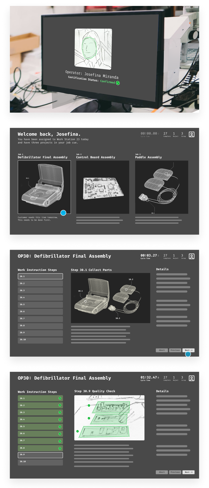
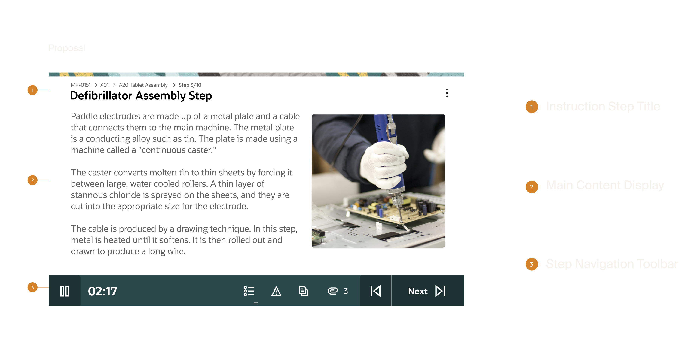
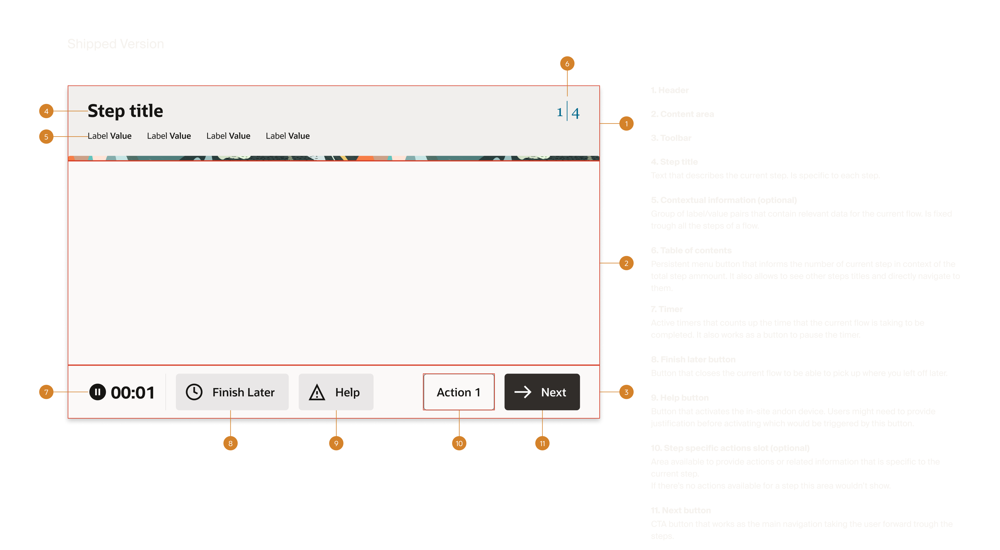

Project Overview
Background
Production Operators don't have the luxury of precise input or time to navigate complex interfaces. In 2023, Oracle's Supply Chain Manufacturing team needed a product for this environment and existing solutions couldn't meet the requirements. This project defined what was possible within the Redwood Design System and set a new bar for how Oracle builds for the factory floor.
Challenge
Transform a concept demo into a shippable product built for one of the most demanding user environments in enterprise software, the factory floor.
Objectives
- Design for PPE-encumbered operators Large touch targets, minimal cognitive load, glove-friendly interactions
- Align stakeholders to define shippable scope for 1.0
- Identify the implementation strategy Custom, Redwood templates, or a hybrid approach
- Reduce steps to task completion
Team
- Jennifer DarmourSVP
- Mark PearsonSenior Director
- Travis CantrellUX Designer
- Rashmi MohantyProject Manager
- Elaine WanStrategy
My Role
I owned design from wireframe to high fidelity. Auditing the existing Redwood page templates, documenting what was available and evaluating whether it could meet the product requirements, or whether a custom approach was necessary.
Once the decision was made to go custom, I was responsible for translating the wireframes and business goals into high fidelity design. The work eventually led to me being embedded directly with the Platform team to develop my designs as a new Redwood template.
Problem Context
Gloved hands; no precision touch.
Interactions measured in seconds, not minutes.
Active production floor, divided attention.
Errors affect downstream production.
Existing Screens
The proof of concept was designed to communicate with stakeholders what the product was capable of. The demo captured the essence of what we wanted to build — it established the product vision, introduced the core workflow and highlighted key interactions. What it didn't address was how to build it, or how it would be used on the factory floor.
Step Completion

Fault Detection

Completion Flow

Process
The process was methodical by necessity. Before any design actually started, we needed to understand what we were actually building and plan how it would be implemented. Early research narrowed the path forward, stakeholder alignment kept the project moving through a large organization, and a deliberate return to low fidelity ensured we were solving the right interaction problems before committing to them visually.
Phase 1 — Discovery
Audit
Before any design decisions could be made, we needed to understand what already existed. I conducted a full audit of the available Redwood page templates documenting each one and cataloging the patterns they included. As we built our comparison matrix we began mapping them against the proposed demo to identify where they aligned and where they fell short. This research helped us not only identify what was available, but what could be altered to fit our needs. Even in a custom build scenario, identifying viable starting points within Redwood meant we weren't starting from zero on every page, reducing the scope of net new work and giving engineering a faster path to implementation. This research helped us not only identify what was available, but what could be altered to fit our needs.
- Can any existing Redwood templates be used as-is?
- Where existing templates fall short, are there patterns we can use as a starting point for custom development?
- If custom development is required, what is the most viable path forward?
Analysis
With the audit complete, we moved into analysis for each template against the wireframes and documenting our findings. For each template we captured what worked, what didn't, and why. Though nothing was perfect match, not all templates weren't dismissed, their viable patterns were collected and cataloged as potential candidates for the custom build phase, giving us a library of starting points to draw from rather than designing everything from scratch.
- Though nothing in the Redwood Design System could be used as-is, the audit surfaced a strong foundation of patterns to leverage as we began designing new solutions.
- The most significant gap identified at this stage: no existing control surface could deliver the functionality the product required.
Alignment
The research didn't leave much room for debate. The audit and analysis made clear that neither native Redwood templates nor a hybrid approach could meet the product requirements. As a design team we aligned on the custom route as the only viable path forward. Moving forward required more than a design decision though. Committing to a custom build meant aligning with engineering on resourcing. Design and development came to the table, agreed on the path, and committed the resources to see it through the entire process required to create a custom page template.
Phase 2 — Interaction Modeling
Reset
With no existing pattern to build from we returned to basics. Rather than forcing fidelity too early, we stripped everything back to gray boxes and began broadly drawing interaction models that could satisfy the product requirements. Each model was shaped by the original demo as a reference point, the constraints we were designing within, and the design sensibility of the team.
- How does an operator move through a work order?
- What does the primary interaction model look like?
- What does the screen need to surface at any given moment, and what can be secondary?
- How do we honor the demo's vision while designing for the constraints the demo ignored?
- What interaction patterns have our customers already responded to that we can draw from?
Exploration
Four interaction models were developed, each representing a distinct philosophy for how the product should behave.
Vegas: Steps presented as scrollable cards on the left, with details surfaced on the right. Navigation through the work order driven by scrolling rather than discrete actions.
Gravity: All primary functionality pushed as low on the screen as possible, acknowledging the physical reality of operators reaching across a workstation.
Triptych: An information-heavy layout built on the assumption that access to attachments and supporting detail reduces errors. The more informed the operator, the fewer mistakes.
MiniFlex: A synthesis of the other models. Kept interaction accessible without overloading the viewport while being functional without being overwhelming.
- Each model was a different answer to the same question, what does this operator actually need in front of them, and what gets in the way?

Validation
Validation was conducted internally. With direct access to factory floor operators limited, we brought the right voices into the room. Our VP of Design and the Strategy PM who served as the customer proxy, represented the specific needs and preferences of operators based on their direct knowledge of the user base. Each model was evaluated against what operators would actually respond to, what would create friction, and what aligned with the constraints of the environment. MiniFlex ended up being the selected direction. It met the core needs of the operator while leaning on enough existing patterns to limit the scope of net new work which freed up the team to concentrate resources on the one component that had no precedent: the toolbar.
Phase 3 — High Fidelity
Adaptation
Across all four models, certain elements were consistent, things every operator would need regardless of which interaction model we pursued. We landed on five core components: the Page Header, Multi-Page Navigation, Single-Page Navigation, Action Buttons, and Auxiliary Content such as safety instructions, quality documentation, and attachments. With requirements defined, we began matching components to their closest Redwood equivalents. Some were quick wins like the Headers, Action Buttons, and Auxiliary Content as each had close enough existing patterns to adapt efficiently. Others required significantly more work. Multi-Page Navigation needed iteration and Action Buttons (which evolved in scope and complexity throughout the process) ultimately became the toolbar, the one component the design system couldn't provide a starting point for.
- Which of these components already exist in our design system, and how close are they to what we need?
- For every component we alter, is the enhancement worth the backlog cost?
- Where do we spend our design effort?
Innovation
Throughout exploration and adaptation, one problem remained unsolved. The bottom of the screen had accumulated a growing set of functions (step navigation, time tracking, attachments, actions) but no arrangement efficiently contained them. Existing patterns couldn't organize the complexity, and time tracking data had no clear home.
The inspiration came from outside enterprise software entirely. The Dynamic Island, a functional companion that adapts to what you're doing as you do it. Motorsport timing displays, real-time metrics that communicate critical information at a glance without demanding attention. Both pointing us toward the same idea: a container that lives at the edge of the experience, surfaces what matters, and stays out of the way.
We imagined it as one UX model with two configurations: a static position for standard deployments, and a dynamic, repositionable version that could be moved freely around the screen to accommodate the variability of factory floor workstations. After several rounds of iteration, the solution organized the full set of operator actions, established a clear hierarchy of importance, and presented everything needed without requiring operators to hunt for it.
Questions- How do we design for workstation variability across different factory environments?
- What does a functional companion look like on a factory floor?
- How do we organize a growing set of functions without overwhelming the operator?

The toolbar served as the operator's primary control surface giving them affordances to advance through the required steps of a work order, tracking time at each step with pause and resume functionality, and house the actions operators relied on most: viewing step details, accessing attachments, calling for assistance, and triggering the Andon light (They need assistance/attention to their workstation).
The most deliberate interaction decision was making it freely repositionable. Factory floors aren't uniform and workstations vary, sight lines differ, and what works at one station creates friction at another. Rather than fixing the toolbar to a position, operators could drag and place it anywhere on the screen, orienting it to their specific setup. No existing pattern covered what this component needed to do. The function, visual design, and interaction model were designed from first principles. However, this surfaced the projects defining tension:
Key Decisions — The ToolbarThe repositionable toolbar, an interaction decision most directly tied to the realities of the factory floor, was cut from the project scope.
While customers had responded favorably to it, the stakeholders deemed the implementation complexity too heavy to include with the build scope.
The toolbar shipped with a fixed position and the repositioning logic was documented and added to the backlog.

Handoff
With the design validated internally and signed off across product, engineering, and strategy, our role as the SCM design team was complete and the designs were handed off. The Platform team, the group responsible for the Redwood Design System, was tasked with developing our designs into a net new page template. What we handed off was a fully resolved design direction. What they built from it became the shipped product.


Outcome
The Production Operator Kiosk shipped and is live on factory floors. What started as a proof of concept built to communicate a vision became a real product, built within Oracle's Redwood Design System and deployed into active production environments. The only component without a prior pattern made it through. The Toolbar, while reduced in scope, captured the core of what we set out to build and the purpose built interface for operators who couldn't afford friction is now running on factory floors.